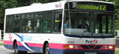
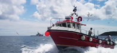
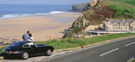
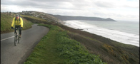
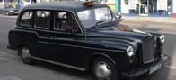

Traveling in and around Penzance & Isles of Scilly
Air & Sea Travel Whether you are staying for a week or just hoping across for an enjoyable day out, there are a variety of ways to get to the Isles of Scilly, via air and sea |
|  Public Transport Penwith has a large bus and rail network reaching every corner of the county. Why not leave the car at home, be kind to your carbon footprint and use public transport. |
National & International Air Travel Taking an international holiday is more convenient than ever with 4 major south west airports. Escape to all corners of the globe from the South West. |
|  Boat Trips around Mounts Bay Take a different look at the coast of Mounts Bay and the Land's End Peninsula, with unique views of the coastline and intimate encounters with local wildlife, boat trips are sure to entertain. |
|
| Car Hire
Take the hassle out of getting around and explore the county by road. |
|  Cycling Penwith is a hot spot for cycling, with Land's End to John O'Groats being the most famous route. Even if your not that adventurous, there is the perfect cycle path for you ability. |
|  Taxis The quick and convenient way to get around Penzance and Penwith |